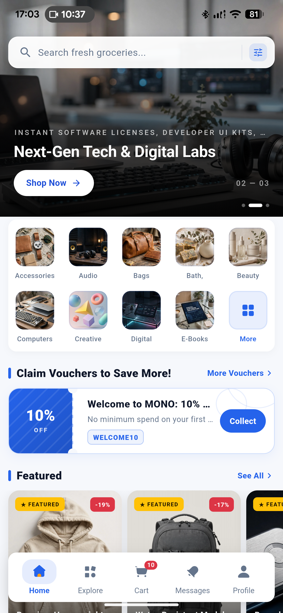
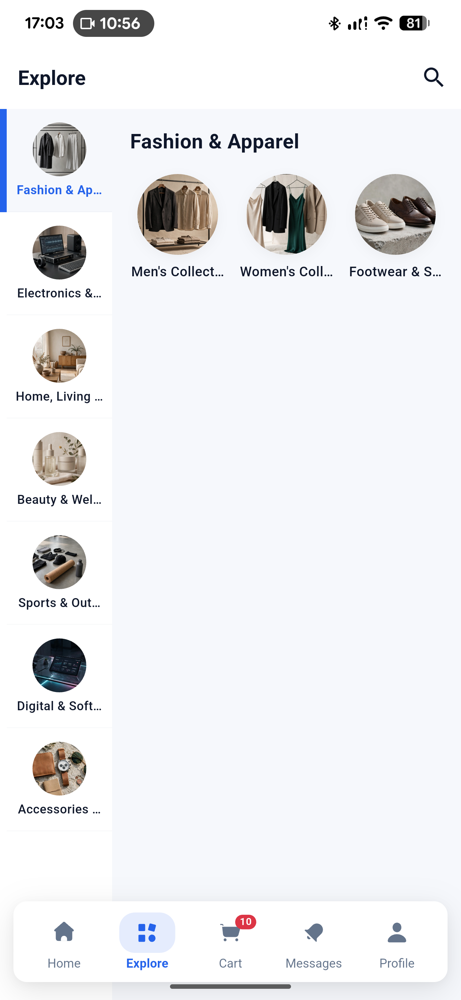
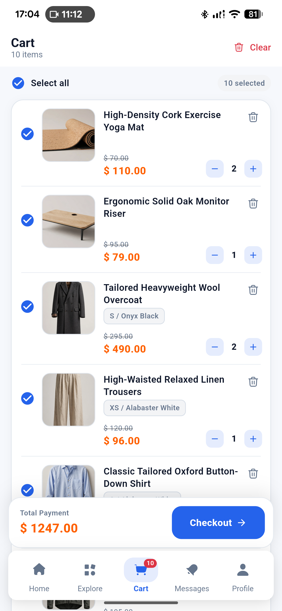
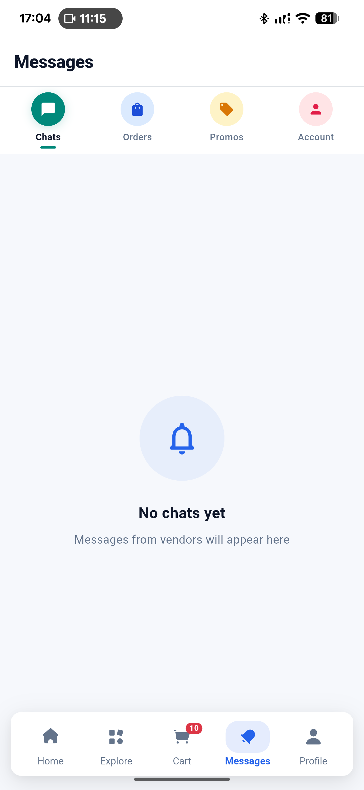
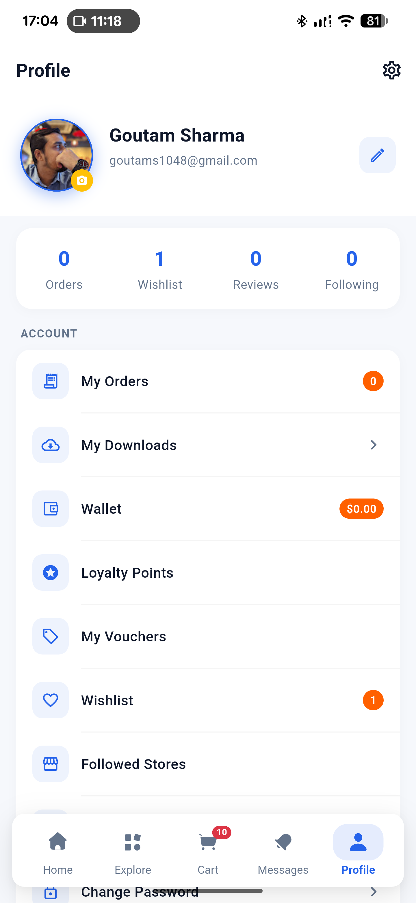

Screens
47 files / 53 declarationsIncludedMono Customer. App documentation.
Complete setup, API, and release guide.
Complete documentation for the mono_customer Flutter marketplace app. Explore the layered architecture, run the five-tab customer shell, connect the API and mobile services, and prepare the app for release on Android and iOS.
Application identity
com.mono.customer.app1.0.0+1Active API default
192.168.0.173 / api / v1Private LANMONO_CUSTOMER / APP PREVIEWFLUTTER





Package
com.mono.customer.appScreens 47 files / 53 declarationsCapture 5 tabs / 1440 × 3120API .173 / v101 / Identity
The customer app at a glance
mono_customer is a conventional Provider-based Flutter application for the Mono marketplace. Its Dart description is “Mono marketplace customer app.” The display name is Mono and the declared version is 1.0.0+1. This guide documents the app exactly as it is implemented.
core, models, providers, repositories, services, screens, theme, and shared widgets.
The five persistent tabs retain state in an IndexedStack: Home, Explore, Cart, Messages, Profile.
Home layouts, localization, theme, legal content, offers, and storefront data can all arrive from API responses.
Count boundary: lib/screens contains 47 public *Screen files. A separate project-wide scan finds six screen-class declarations under lib/widgets: five checkout result-state classes (ResultCancelledScreen, ResultExpiredScreen, ResultFailedScreen, ResultVerifyingScreen, and ResultSuccessScreen) plus HostedWalletTopupWebViewScreen. Together, that is 53 project-wide declarations; the 47-file count is specifically the public screen layer.
| Detail | Value | Notes |
|---|---|---|
| Dart package | mono_customer | pubspec.yaml |
| Dart constraint | ^3.12.2 | pubspec.yaml |
| Locked SDK floors | Dart >=3.12.2 <4.0.0 · Flutter >=3.44.0 | pubspec.lock |
| Android ID / namespace | com.mono.customer.app | android/app/build.gradle.kts |
| iOS bundle ID | com.mono.customer.app | ios/Runner.xcodeproj/project.pbxproj |
| Named routes | No registered named-route map; navigation uses Material routes and builders. | lib/main.dart |
Route boundary: do not describe /login as a registered named route. The 401 handler attempts pushNamedAndRemoveUntil('/login'), but the source does not provide a named-route map to satisfy it.
02 / Architecture
A layered Flutter customer app
Use the existing boundaries when extending the app. Providers own mutable state; repositories make API calls; services wrap shared infrastructure; screens compose workflows; widgets keep presentation reusable.
mono_customer/
├─ lib/main.dart app bootstrap + 22 providers
├─ lib/core/ cache, logger, translations, push, auth, legal
├─ lib/models/ address, cart, chat, checkout, home, product, user...
├─ lib/providers/ 20 stateful feature providers
├─ lib/repositories/ 26 API/data repositories
├─ lib/services/ API, endpoint registry, Ably chat, checkout links
├─ lib/screens/ 47 public *Screen classes
├─ lib/theme/ app colors and theme
├─ lib/widgets/ 63 shared widgets
├─ test/ 22 test files
├─ android/ · ios/ · web/ · linux/ · macos/ · windows/
└─ gui-test-screenshots/ desktop/web folders, not mobile build targets| Layer | Responsibility | Customer examples |
|---|---|---|
| Core | Cross-cutting app services and primitives. | api_client.dart settings, translations, Firebase, session coordinator |
| Models | Typed data and JSON shapes. | address, order, product, wallet, digital entitlement |
| Providers | ChangeNotifier state, loading, mutations, refresh. | cart, home, orders, user, wishlist, vouchers |
| Repositories | HTTP calls, parsing, endpoint selection. | auth, products, search, checkout, notifications |
| Services | Shared client and platform/realtime access. | Dio, Ably chat, endpoint registry, checkout links |
| Screens / widgets | User workflows and reusable presentation. | 47 public screens and 63 shared widgets |
03 / Product surface
Customer screens and real workflows
The screen layer has 47 public *Screen files under lib/screens/. The wider project has six additional screen-class declarations under lib/widgets/—five checkout result states and HostedWalletTopupWebViewScreen—for 53 project-wide declarations. Internal widgets, cards, tabs, dialogs, and controllers are not additional public screen files. The main shell is persistent and state-preserving.
01HomeHomeScreen / backend layout selection
02ExploreCategories, search, flash sale
03CartSelection, vouchers, totals
04MessagesInbox tabs and chat entry
05ProfileOrders, wallet, loyalty, settings
Startup & shell
SplashScreen→MainScreen- Home layout from backend theme: Standard, Marketplace, Aurora, Nova; unknown falls back to Standard.
IndexedStackpreserves tab state.
Auth & account
- Login, Signup, Forgot Password, OTP, Reset Password, Change Password.
- Google sign-in is conditional on backend configuration.
- Cart and Profile open Login for guests; authenticated Messages fetches are conditional.
Commerce
- Products, categories, stores, vouchers, cart, checkout, orders, invoice PDF, reorder and payment retry.
- Wallet, loyalty, downloads, wishlist, addresses, legal, settings and support content.
Support & realtime
- Help & Support renders server contact channels, FAQs, contact form and support cards.
- Notifications group Chats, Orders, Promos and Account with unread actions.
- Ably is chat-only: text, image, file, presence, deduplication and delivered state.
Implementation note: the following source-backed behaviors are not completed features: Export Data only confirms; marketing banner category/URL actions parse without routing; About CTA only closes; digital-only checkout conditions conflict; order month translation keys mismatch; wallet top-up callback is not checkout’s authoritative reconciliation model.
04 / Start here
Requirements and installation
Run this as a mobile Flutter project. Desktop and web folders exist in the repository, but seven source files import dart:io, so web is not a verified customer-mobile target. The local tool marker is Flutter 3.47.4.
Toolchain
Dart ^3.12.2; Flutter locked floor >=3.44.0. Use a toolchain compatible with the lockfile.
Install
From mono_app/, install packages and launch an Android or iOS target with Flutter tooling.
Connect
Fresh installs use the compiled private LAN API default. Configure a reachable API before testing device builds.
Terminal / mono_app
flutter pub get
flutter runAndroid
Compile SDK 37 · min SDK maxOf(flutter.minSdkVersion, 23) · Java/Kotlin 17 · AGP 9.0.1 · Gradle 9.1.0.
iOS
Deployment target 13.0 · Swift 5.0 · bundle com.mono.customer.app. See the current Apple setup boundary below.
05 / Packages
Direct dependencies from the customer lockfile
pubspec.lock contains 198 locked packages: 30 direct main, 3 direct dev/SDK, and 165 transitive. The table below is the direct customer set; do not infer payment, maps, analytics, or UI-suite SDKs that are not declared.
| Direct main package | Constraint | Locked |
|---|---|---|
ably_flutter | ^1.2.44 | 1.2.44 |
app_links | ^7.2.1 | 7.2.1 |
cached_network_image | ^4.0.0 | 4.0.0 |
chewie | ^1.16.2 | 1.16.2 |
cupertino_icons | ^1.0.9 | 1.0.9 |
dio | ^5.11.1 | 5.11.1 |
file_picker | ^12.2.0 | 12.2.0 |
firebase_core | ^4.14.0 | 4.14.0 |
firebase_messaging | ^16.6.0 | 16.6.0 |
flutter_cache_manager | ^3.4.2 | 3.4.2 |
flutter_inappwebview | ^6.1.5 | 6.1.5 |
flutter_local_notifications | ^22.3.0 | 22.3.0 |
flutter_secure_storage | ^11.0.0 | 11.0.0 |
flutter_staggered_grid_view | ^0.7.0 | 0.7.0 |
flutter_svg | ^2.3.0 | 2.3.0 |
google_sign_in | ^7.2.0 | 7.2.0 |
html | ^0.15.7 | 0.15.7 |
image_picker | ^1.2.3 | 1.2.3 |
logger | ^2.7.0 | 2.7.0 |
package_info_plus | ^10.2.1 | 10.2.1 |
path_provider | ^2.1.6 | 2.1.6 |
pdfrx | ^2.4.8 | 2.4.8 |
provider | ^6.1.5+1 | 6.1.5+1 |
share_plus | ^13.3.0 | 13.3.0 |
shared_preferences | ^2.5.5 | 2.5.5 |
url_launcher | ^6.3.2 | 6.3.2 |
video_player | ^2.14.0 | 2.14.0 |
youtube_player_flutter | ^10.0.1 | 10.0.1 |
Dev / SDK: flutter, flutter_localizations, flutter_test, flutter_lints ^6.0.0, and flutter_launcher_icons ^0.14.4. No payment SDK, maps/geolocation, Firebase Analytics, native splash package, support-ticket package, rich-text editor, or commercial UI suite is declared.
06 / Networking
Dio, the .173 default, and unprefixed endpoints
The active compiled default is http://192.168.0.173/mono/mono_market/api/v1, a private LAN cleartext development URL—not a production URL. ApiClient applies a 15-second connect timeout, 60-second receive timeout, JSON headers, Bearer token, X-Locale, Accept-Language, and relative media URL resolution.
API CLIENT / ACTIVE DEFAULTDEV URL
BASE URL
http://192.168.0.173/mono/mono_market/api/v1CONNECT 15sRECEIVE 60sSEND explicit timeout not set
Endpoint registry shape
ApiClient → api_endpoints.dart → repositories → providersCustomer API surface
Unprefixed endpoint families cover auth, theme, home/storefront, products, stores/follow, search, cart, coupons, vouchers, loyalty, wishlist, checkout/hosted checkout, orders/invoices, downloads, notifications, addresses, settings, localization, content, and chat.
Media + headers
Relative media URLs resolve against the active base URL. Locale headers accompany requests; the client expects JSON and uses the secure token as a Bearer credential.
07 / Session
Environment, token migration, and auth boundaries
Secure storage reads api_base_url when present, but the app has no setter or settings UI for it. Fresh installs therefore use the compiled .173 default. Secure token storage uses api_token; a legacy auth_token value is migrated once from SharedPreferences. There is no refresh-token implementation.
| Concern | Current source behavior | Boundary |
|---|---|---|
| Login | Email/password, register, Google when enabled. | Backend config gates Google sign-in. |
| Password recovery | Forgot-password OTP, send, verify and reset. | No refresh-token path. |
| 401 | Clears session and user-scoped state. | Attempted named login push is not backed by registered routes. |
| Logout | Unregisters FCM and clears local state. | Does not call /auth/logout. |
Do not overstate session security: there is no refresh-token implementation in source, and manual logout is local cleanup plus FCM unregister—not a demonstrated server logout call.
08 / Presentation
Customer identity, theme, and localization
The customer mark is a black/white shopping-bag “M” with a yellow dot, distinct from other app identities. Splash copy is MONO., Everything You Need, One Store, Preparing your store…, and Powered by Mono.
CUSTOMER BRAND ASSETUse the customer mark consistently.
Copy from mono_app/assets/logo.png and assets/icons/. The bundled wishlist.svg exists but is not directly referenced by current Dart code.
Backend theme layouts
/theme and /app-theme drive Standard, Marketplace, Aurora, or Nova. Splash checks theme version; unknown layouts fall back to Standard.
Dark mode
User dark mode is ORed with backend dark mode. Fallback surfaces include #0A0A0A, #18181B, primary #171717, and teal, orange, amber, and blue accents.
Localization
Built-in English and Arabic maps are merged with server bundles. Selected locale is sent to the API; sparse Arabic falls back to English.
09 / Platform services
Android-only FCM startup, chat-only Ably
Unlike a lazy-after-login design, customer main() initializes Firebase before runApp. Runtime push initialization is Android-only: !kIsWeb && defaultTargetPlatform == TargetPlatform.android.
Startup sequence
- Firebase project
mono-dd879, packagecom.mono.customer.app. - Channel
high_importance_channel: “Messages and Updates”. - Requests alert, badge, sound, and notification permission.
- Registers token only with an authenticated API token; stable key
notification_device_id. - Unregisters on manual logout.
Never reproduce Firebase API keys, OAuth client IDs, or certificate values from the config file.
Conversation transport
- Requests
GET /chat/token?conversationId=.... - Uses private
conversation.customerchannel. - Publishes
chat.message.sent. - No hard-coded key in source.
- Supports customer-to-store text, image, file, presence, deduplication, and delivered state.
Set up your own Firebase project, step by step
The package ships with a working google-services.json so the app runs immediately, but it points at a shared Firebase project. Create your own before you publish — it takes about ten minutes and needs only a free Google account.
- Create the project
Open console.firebase.google.com and click Add project. Name it something like
mono-customerand disable Google Analytics unless you want it. The project finishes creating once you confirm the analytics choice. - Add the Android app
On the project overview click the Android icon. The package name must match your
applicationIdcharacter for character, so entercom.mono.customer.appuntil you rename it. Add a nickname and downloadgoogle-services.json. - Place the config file
Copy it to
android/app/google-services.json, replacing the bundled one. Both the filename and the folder are required — a wrong path still builds but throwsDefaultFirebaseApp is not initializedat runtime. - Enable Cloud Messaging
In the left sidebar open Build → Cloud Messaging. The Send test message button confirms delivery works. No other FCM setup is needed.
- Leave the channel to the app
The app creates
high_importance_channel(“Messages and Updates”) at runtime. Do not create a matching channel in the console; the app owns it and a duplicate is ignored. - Rebuild, do not hot reload
Changing the config file needs a full rebuild. Stop the app and run
flutter run -d <device>again, addingflutter cleanfirst if the old configuration looks cached.
Finding your values. Project settings → Your apps shows the registered package name and API key. Never commit a service-account key or a private key file. The API key in google-services.json identifies the project but is not a secret on its own — access is governed by Firebase security rules.
Tap routing
Chat → conversation
Order → order detail
Product → product detail
Fallback → Messages
10 / iOS
iOS 13.0 exists; Apple setup does not
The iOS target is present with deployment target 13.0, Swift 5.0, bundle ID com.mono.customer.app, and URL scheme mono. The current project is not fully configured as a production iOS client.
- No
DEVELOPMENT_TEAM. - No
GoogleService-Info.plist. - No entitlements, APNs, or push background mode.
- No camera, photo, or microphone usage strings.
- No Podfile or Podfile.lock; Xcode references a generated local Swift package.
Info.plist has no ATS exception for the current HTTP URL. Do not claim arbitrary cleartext loads are allowed on iOS.
Verify Apple signing, Firebase, push, privacy usage descriptions, and dependency integration before a device release.
11 / Build loop
Build and run from the customer project
Start with a reachable API, an authenticated or guest-capable session, and the correct platform configuration. A clean clone may need Gradle wrapper setup because wrapper artifacts are locally present but ignored/not tracked.
01 / Packages
flutter pub get02 / Android
flutter run -d <device>03 / Static analysis
flutter analyze04 / Tests
flutter testAndroid release signing: the release build uses debug signing. There is no key.properties, JKS, or production signing config in the package, so you must add your own before uploading to Google Play. The generic steps are: run keytool -genkey -v -keystore ~/upload-keystore.jks -keyalg RSA -keysize 2048 -validity 10000 -alias upload, create android/key.properties next to build.gradle.kts with your store passwords, point the release build type at that file, then rebuild. Keep the keystore and key.properties out of version control and back them up — losing the key means you can never update the listing again.
Change the application ID before you publish
Both platforms ship with the identifier com.mono.customer.app, a real reverse-domain identifier that builds fine. Google Play and the App Store each require the identifier to belong to the account publishing the app, so replace it with your own before your first upload — for example com.yourcompany.mono.customer.
| Platform | File | What to change |
|---|---|---|
| Android namespace | android/app/build.gradle.kts | namespace = "com.yourcompany.mono.customer" |
| Android application ID | android/app/build.gradle.kts | applicationId = "com.yourcompany.mono.customer" |
| iOS bundle ID | ios/Runner.xcodeproj/project.pbxproj | PRODUCT_BUNDLE_IDENTIFIER for the Runner target |
| Firebase Android app | Firebase console | Re-register under the new package name and download a fresh google-services.json |
Renaming the Android package also means moving the Kotlin source to match: android/app/src/main/kotlin/com/mono/customer/app/MainActivity.kt becomes android/app/src/main/kotlin/com/yourcompany/mono/customer/app/MainActivity.kt, with its package line updated too. Skipping this fails the build with a Namespace error pointing at the manifest.
Android SDK levels are pinned deliberately
android/app/build.gradle.kts sets compileSdk = 37 and pins targetSdk = 36 as an explicit integer rather than flutter.targetSdkVersion, which resolves to 35 on Flutter 3.29 and newer — below the current Google Play submission requirement. The explicit number keeps uploads accepted as you upgrade Flutter. minSdk stays at maxOf(flutter.minSdkVersion, 23) because Firebase Messaging and flutter_local_notifications need a modern minimum.
12 / Readiness
What is ready, and what is not
Mobile foundation
- Provider-based layered app with 47 public screens.
- Android FCM and customer chat flows are wired to source services.
- Backend theme, localization, and storefront workflows are represented.
- Test directory contains 22 test files.
Before production
- Replace the private LAN cleartext API default with a production configuration path.
- Configure Android production signing and track the Gradle wrapper.
- Complete Apple/Firebase, APNs, privacy, and dependency setup.
- Reconcile checkout, wallet callback, digital-only conditions, translations, and logout semantics.
| Area | Source-backed limitation / next check |
|---|---|
| API | Compiled .173 default is private LAN cleartext; secure base URL has no setter/UI. |
| Auth | No refresh token; logout does not call /auth/logout; 401 named-route attempt is unsupported. |
| Actions | Export Data only confirms; banner actions parse without routing; About CTA only closes. |
| Commerce | Digital-only checkout UI/request and place-order conditions conflict; hosted status is backend-authoritative. |
| Localization | Order month translation keys mismatch; sparse Arabic falls back to English. |
| Release ops | No tracked CI workflow, changelog, license file, or release checklist. |
13 / Developer path
Extend the app without breaking its architecture
Add or update a typed model under lib/models/. Keep parsing close to the data shape and preserve source-backed field names.
Register the customer path in lib/services/api_endpoints.dart and use ApiClient from a repository rather than a screen.
Add loading, error, refresh, and mutation behavior in the matching provider under lib/providers/.
Add the public *Screen workflow, then extract reusable visual pieces into lib/widgets/.
Add or update tests under test/, then verify the affected mobile state, empty, loading, and error paths.
Extension data flow
Screen → Provider → Repository → ApiClient → customer endpoint
↘ models / services / widgetsWorked example: add a reviews feature module
Here is the five-step shape above applied to one concrete feature, so you can copy it rather than infer it. The example adds a product-reviews view backed by GET /products/{id}/reviews.
- Model —
lib/models/product_review.dartA data class with
fromJsonthat tolerates a missing optional field such asreviewer_name, so one sparse API response cannot break the whole list. - Endpoint —
lib/services/api_endpoints.dartAdd a static path builder alongside the existing product routes. Keep URLs out of screens and repositories.
- Repository —
lib/repositories/review_repository.dartTakes an
ApiClient, fetches the list, maps each item into the model, and returns typed data or throws. No widget imports. - Provider —
lib/providers/review_provider.dartA
ChangeNotifierwithreviews,isLoading, anderror, exposingload(productId). Register it in theMultiProviderlist inlib/main.dartonly if it should survive tab changes; otherwise create it in the owning screen. - Screen —
lib/screens/product/product_reviews_screen.dartA
*Screenclass that watches the provider and renders loading, empty, error, and populated states, reusing existing cards fromlib/widgets/. Reach it from the existing product screen withNavigator.push— do not add a sixth bottom tab for it.
lib/
├─ models/product_review.dart ← new
├─ services/api_endpoints.dart ← add reviews path
├─ repositories/review_repository.dart ← new
├─ providers/review_provider.dart ← new
├─ screens/product/product_reviews_screen.dart ← new
└─ widgets/review_tile.dart ← new, if reusedTest the boundary, not the pixels. A repository test asserting that fromJson survives a missing optional field, and a provider test asserting that load() sets error on failure, cover what actually breaks. Add a widget test when a screen has a non-trivial empty or error state.
14 / Support
Support and release checklist
Help & Support is a server-content surface: it renders support cards, FAQs, contact channels and a contact form. About renders server content; Legal renders API-managed privacy, terms and slugs. These are client presentation flows, not proof that the backend is configured or available.
BEFORE YOU SHIP
Complete the release checklist.
Work through the four items above before publishing to Google Play or the App Store. Each one covers a production API base URL, session handling, release signing, and the checkout and wallet flows that still need wiring.